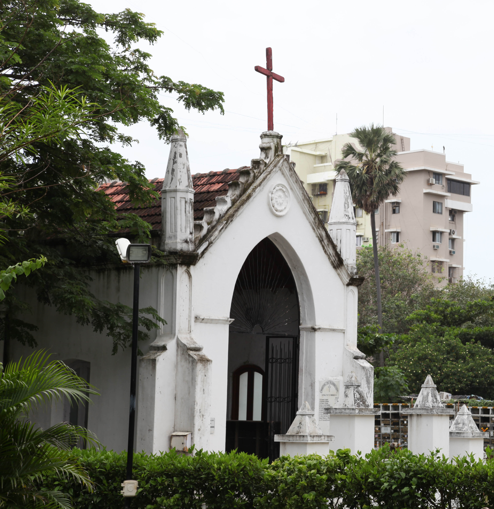
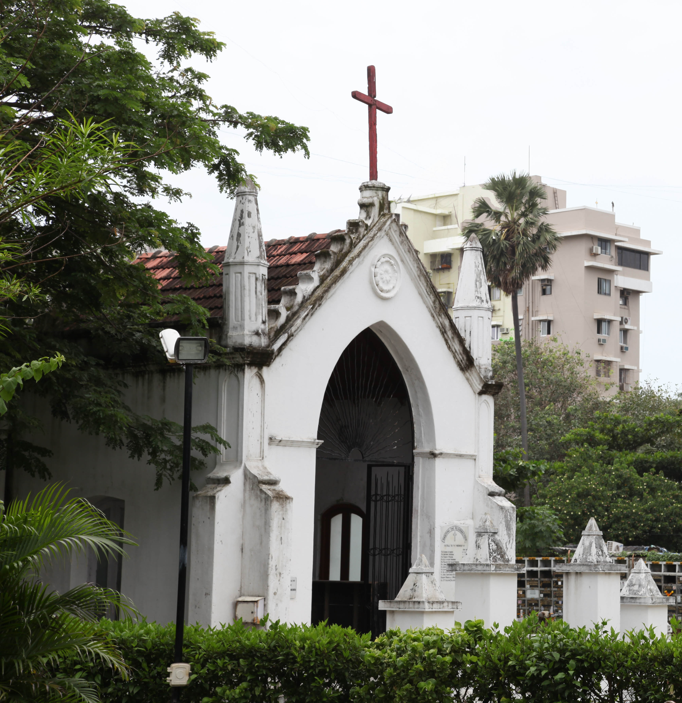

St Teresa's Oratory
The St Therese’s Oratory was erected in 1929 in the walled-in cemetery after the older, dilapidated one had been demolished. It was built by Mr. Dominic Miranda of Chimbai, in memory of his wife.

The St Therese’s Oratory was erected in 1929 in the walled-in cemetery after the older, dilapidated one had been demolished. It was built by Mr. Dominic Miranda of Chimbai, in memory of his wife.
